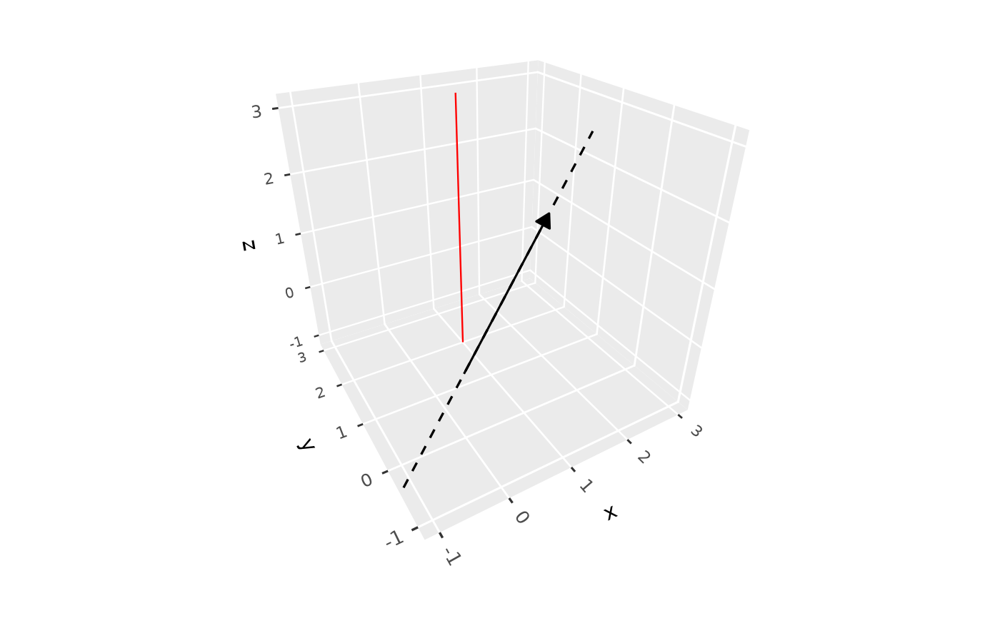
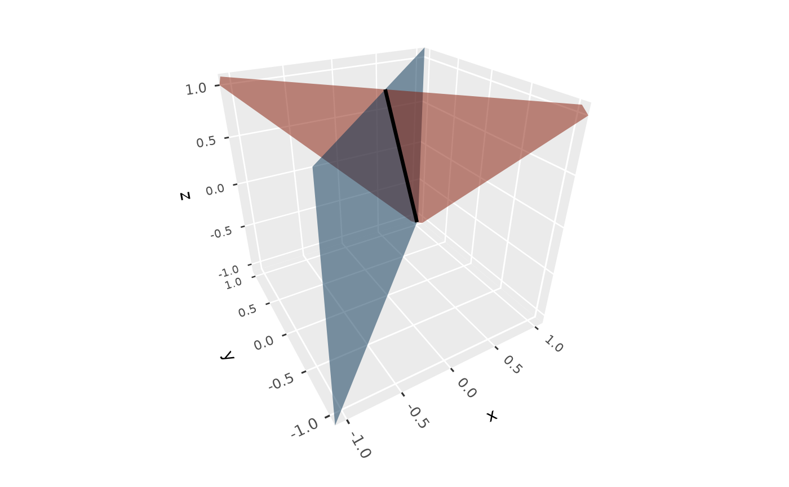

geom_refline_3d() draws infinite straight lines, clipped to the panel,
such as the line spanned by a vector, or a vertical reference line. Each
line passes through the point x, y, z in the direction dx, dy,
dz.
Usage
geom_refline_3d(
mapping = NULL,
data = NULL,
...,
x = 0,
y = 0,
z = 0,
dx,
dy,
dz,
scale_depth = TRUE,
on_top = FALSE,
na.rm = FALSE,
show.legend = NA,
inherit.aes = FALSE
)Arguments
- mapping
Set of aesthetic mappings created by
aes(), mapping the direction componentsdx,dy, anddz. Used only when no direction is given as a parameter.- data
The data to be displayed in this layer.
- ...
Other arguments passed on to
layer(), such as aesthetics likecolour,linewidth,linetype, andalpha.- x, y, z
Coordinates of the point each line passes through. Default
0.- dx, dy, dz
Components of each line's direction. Each defaults to
0, but they can't all be zero.- scale_depth
Controls depth-based scaling, drawing closer elements larger or thicker and farther ones smaller or thinner.
TRUE(the default) applies full scaling andFALSEdisables it; a number sets the strength directly, where1matchesTRUE,0matchesFALSE, values below 1 subdue the effect and values above 1 exaggerate it. This affects the layer only; usecoord_3d(scale_depth = )for panel and axis components.- on_top
If
TRUE, the layer is drawn on top of the rest of the scene instead of being depth-sorted with it, so other geometry never hides or cuts it, e.g. to keep labels legible. The layers drawn on top are depth-sorted among themselves. DefaultFALSE.- na.rm
If
FALSE, lines with missing directions are removed with a warning.- show.legend
Logical indicating whether this layer should be included in legends. Lines given as parameters are never included.
- inherit.aes
If
TRUE, combine the plot's default aesthetics withmapping. Defaults toFALSE.
Details
Directions can be given as parameters, as vectors to draw several lines,
or mapped from data in aes(). The point a line passes through is always
a parameter, since it would otherwise affect the axes' ranges; when lines
are given as parameters, it can be a vector giving each line's point, and
when directions are mapped, it is a single point shared by all lines.
Lines are built from the panel's limits when the plot is drawn, so they don't expand the plot's axis ranges; a line that misses the panel entirely is skipped with a warning. They are depth-sorted with the rest of the scene, and drawn on top of any plane or polygon they lie in. Positions and directions are in the plot's (transformed) scale space.
Aesthetics
geom_refline_3d() understands the following aesthetics: dx, dy,
dz, colour, linewidth, linetype, and alpha.
Examples
# The line spanned by a vector, and a vertical line at x = 1, y = 2
v <- c(2, 1, 1.5)
ggplot(data.frame(x = 0, y = 0, z = 0, xend = v[1], yend = v[2], zend = v[3]),
aes(x, y, z, xend = xend, yend = yend, zend = zend)) +
geom_segment_3d(arrow = arrow(type = "closed", length = unit(8, "pt"))) +
geom_refline_3d(dx = v[1], dy = v[2], dz = v[3], linetype = "dashed") +
geom_refline_3d(x = 1, y = 2, dz = 1, colour = "red") +
lims(x = c(-1, 3), y = c(-1, 3)) + zlim(-1, 3) +
coord_3d()

# The line along which two planes intersect
ggplot() +
geom_plane_3d(a = c(1, 1), b = c(1, -1), c = c(1, 0), d = c(1, 0),
fill = c("tomato", "steelblue")) +
geom_refline_3d(x = 0.5, y = 0.5, z = 0, dx = 1, dy = 1, dz = -2,
linewidth = 1) +
lims(x = c(-1, 1), y = c(-1, 1)) + zlim(-1, 1) +
coord_3d()
